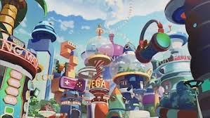

El arco de Egghead, parte del arco final de *One Piece* creado por Eiichiro Oda, marca un punto de inflexión en la narrativa. La isla de Egghead, un laboratorio futurista liderado por el Dr. Vegapunk, introduce elementos de ciencia avanzada y revelaciones cruciales sobre el mundo de *One Piece*. Los Piratas del Sombrero de Paja llegan a esta isla tras los eventos de Wano, enfrentándose a un entorno lleno de innovaciones tecnológicas y peligros inesperados.
